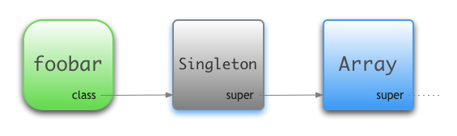

https://en.wikipedia.org/wiki/Metaprogramming
Metaprogramming is a programming technique in which computer programs have the ability to treat programs as their data. It means that a program can be designed to read, generate, analyse or transform other programs, and even modify itself while running.
Singleton methods in Ruby live in a special, hidden class called the singleton class
foobar = Array.new
foobar.class # => Array
foobar.size # => 0
foobar = Array.new
def foobar.size
"Hello World!"
end
foobar.size # => "Hello World!"
foobar.class # => Array
bizbat = Array.new
bizbat.size # => 0
foobar = Array.new
def foobar.size
"Hello World!"
end
foobar.size # => "Hello World!"
foobar.class # => Array
bizbat = Array.new
bizbat.size # => 0

module Foo
def foo
"Hello World!"
end
end
foobar = []
foobar.extend(Foo)
foobar.singleton_methods # => ["foo"]
Invoked by Ruby when obj is sent a message it cannot handle. symbol is the symbol for the method called, and args are any arguments that were passed to it. By default, the interpreter raises an error when this method is called. However, it is possible to override the method to provide more dynamic behavior.
class Dog
def method_missing(method_name, *args, &block)
if method_name == :bark
'woof!'
else
super
end
end
end
Dog.new.bark
=> "woof!"
class LoudSpeaker
def self.method_missing(message, *args, &block)
if [:exclaim, :yodel, :howl, :sob, :beg].include?(message)
puts args.first
else
# we don't want to handle this missing method,
# we want Ruby to raise the NoMethodError it ought to
super
end
end
end
LoudSpeaker.exclaim "helloooo!"
=> helloooo!
respond_to_missing? method should be always overridden if you are using method_missing technique
class Dog
def method_missing(method_name, *args, &block)
if method_name == :bark
'woof!'
else
super
end
end
def respond_to_missing?(method, *)
method == :bark || super
end
end
Dog.new.respond_to?(:bark)
=> true
Dog.new.respond_to?(:bark)
=> true
class String
def to_string
"#{self} - #{Time.now}"
end
end
p 'any text'.to_string
=> any text - 2018-07-23 11:09:52 +0300
class Department
def initialize(employees)
@employees = employees
end
def calculate
@employees.map(&:calculate).sum
end
end
class Employee
def initialize(salary)
@salary = salary
end
def calculate
@salary * 0.8
end
end
employees = [
Employee.new(1000),
Employee.new(5000)
]
total_salary = Department.new(employees).calculate
p total_salary
=> 4800.0
class Dog; end
Dog.class_eval do
def bark
'Woof!'
end
end
p Dog.new.bark
=> Woof
class Dog; end
Dog.instance_eval do
def bark
'Woof!'
end
end
p Dog.bark
=> Woof
module Communication
def greeting
"Hey, #{name}"
end
end
class Person
include Communication
def name
'John Doe'
end
end
p Person.new.greeting
=> Hey, John Doe
module PersonGreeting
def greeting
"Hey, #{name}"
end
end
module DepartmentGreeting
def greeting
"Department #{title}"
end
end
module Communication
def self.included(base)
base.include Object.const_get("#{base}Greeting")
end
end
class Person
include Communication
def name
'John Doe'
end
end
class Department
include Communication
def title
'HR department'
end
end
p Person.new.greeting
=> Hey, John Doe
p Department.new.greeting
=> Department HR department
class User < ActiveRecord::Base
devise :database_authenticatable, :registerable,
:recoverable, :rememberable, :trackable, :validatable
end
def test
puts "You are in the method"
yield
puts "You are again back to the method"
yield
end
test { puts "You are in the block" }
You are in the method
You are in the block
You are again back to the method
You are in the block
def test
yield 5
puts "You are in the method test"
yield 100
end
test { |i| puts "You are in the block #{i}" }
You are in the block 5
You are in the method test
You are in the block 100
def test(&block)
block.call
end
test { puts "Hello World!"}
Hello World!
describe Array do
describe "includes_subset?" do
it "finds subsets" do
a = [1,2,3,4,5]
b = [1,2]
expect(a.includes_subset?(b)).to eq(true)
end
end
end
namespace :backup do
desc "Backup assets"
task :assets => :environment do
tar_assets
end
end
<html>
<pre>
<span></span>
</pre>
<pre></pre>
</html>
class Html
attr_accessor :content
def self.build(&block)
Html.new &block
end
def initialize(&block)
@content = ''
html &block
end
def html(&block)
content << ''
instance_eval(&block).to_s
content << ''
end
def pre(&block)
content << ''
instance_eval(&block).to_s
content << ''
end
def div(&block)
content << ''
instance_eval(&block).to_s
content << ''
end
def span(&block)
content << ''
instance_eval(&block).to_s
content << ''
end
end
html = Html.build do
pre do
span do
end
end
pre do
end
end